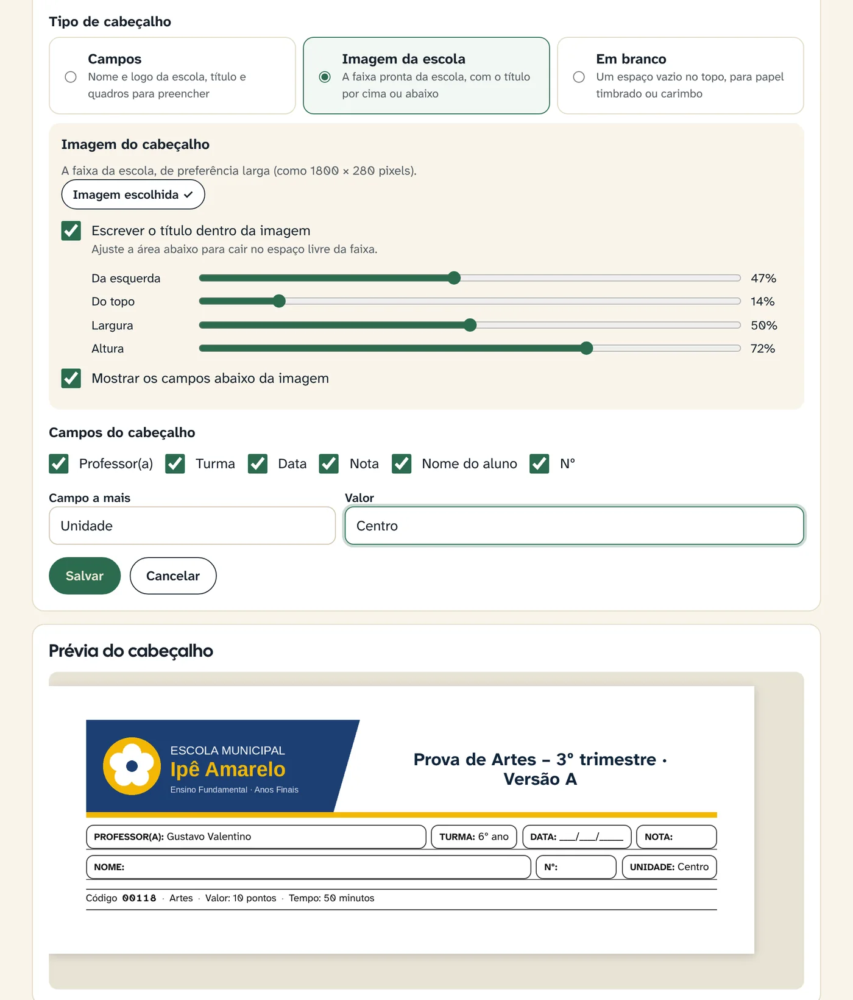
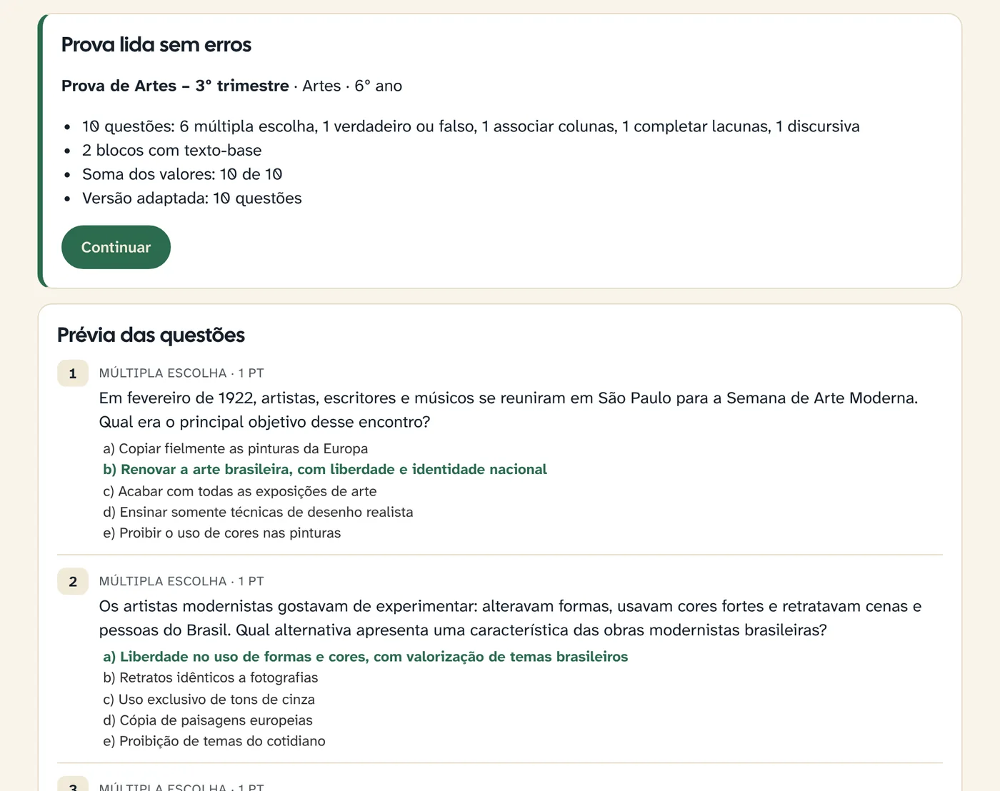
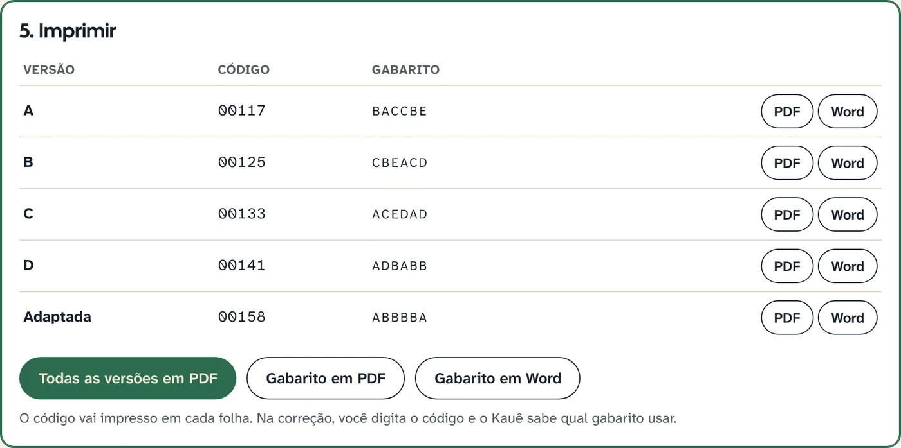
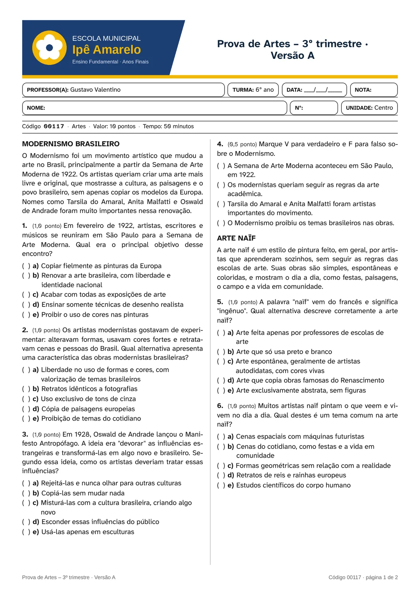
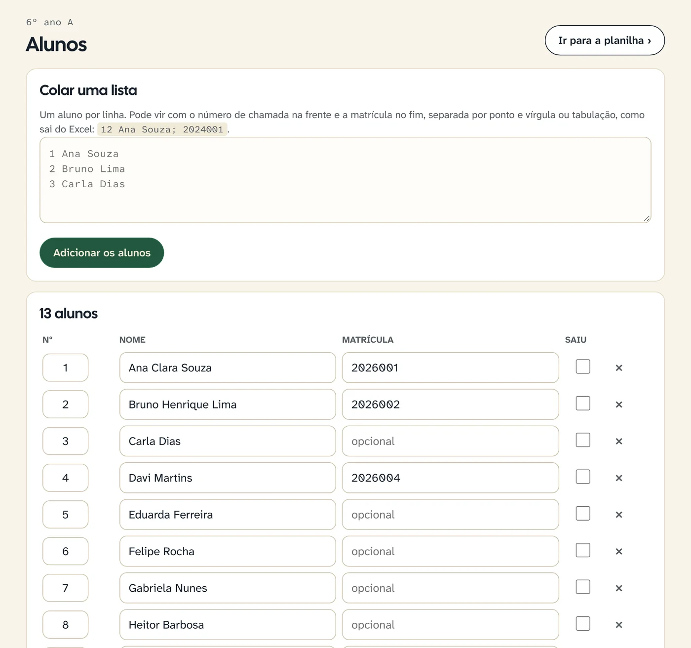
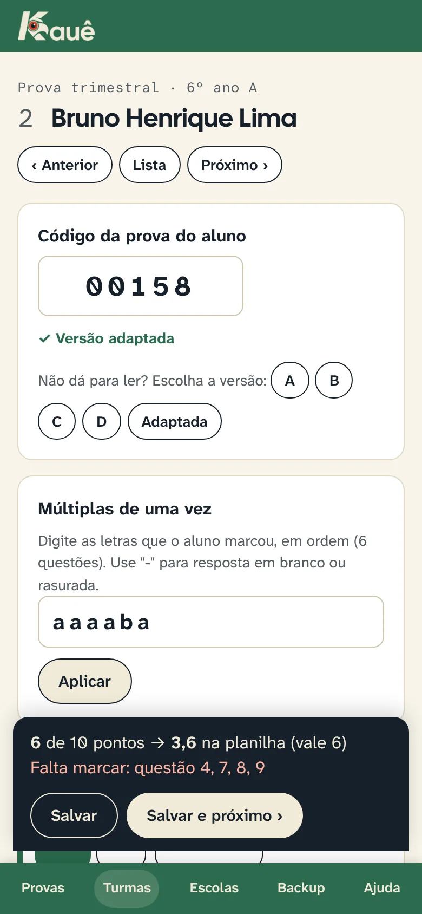
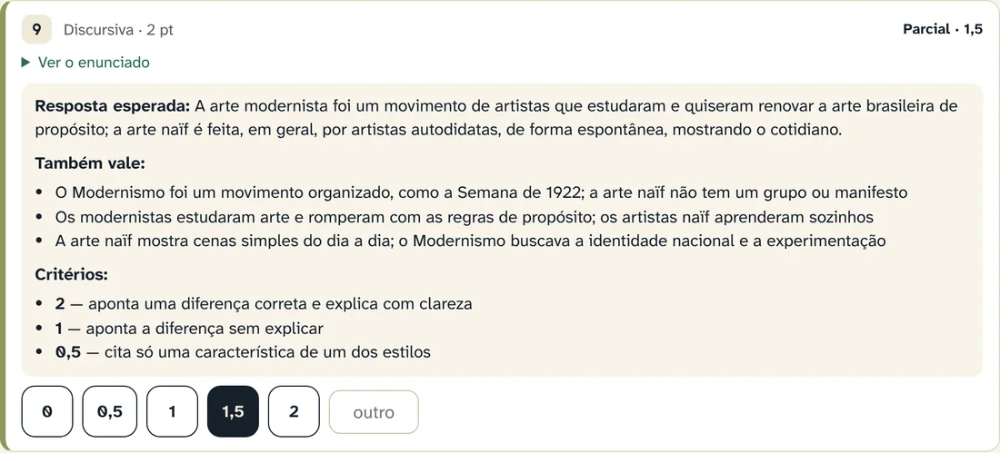
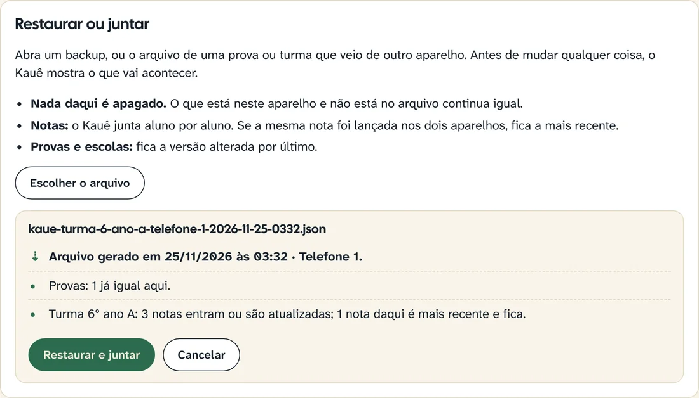

Este tutorial mostra o caminho completo: da prova montada com a IA até a nota na planilha da turma. Siga na ordem na primeira vez. Depois, use o índice para ir direto ao ponto.
1 Antes de começar
O Kauê funciona no navegador, sem cadastro e sem senha. Você precisa de:
- Um computador ou celular com o Chrome, o Edge ou o Safari atualizado. O computador é melhor para montar e imprimir; o celular é ótimo para corrigir.
- Internet só na primeira vez. Depois que o Kauê abre uma vez, ele fica guardado no aparelho e funciona offline.
- Uma conta numa IA (Claude, ChatGPT ou Gemini) e o Assistente de Provas em PDF, para montar a prova.
2 Abrir e instalar o Kauê
- Abra kaueavalia.github.io e toque em Abrir o app.
- No celular (Android, Chrome): toque nos três pontinhos ⋮ e em Adicionar à tela inicial ou Instalar app. O Kauê ganha um ícone como qualquer aplicativo.
- No iPhone (Safari): toque no botão de compartilhar e em Adicionar à Tela de Início.
- No computador (Chrome ou Edge): clique no ícone de instalar, no fim da barra de endereço, ou deixe o endereço nos favoritos.
Em cima (ou embaixo, no celular) ficam as seções: Provas, Turmas, Escolas, Backup e Ajuda, onde está este mesmo tutorial.
3 Cadastrar a escola e o cabeçalho
Cada escola guarda o seu cabeçalho, e você pode cadastrar várias. Vá em Escolas › Nova escola e escolha o tipo:
- Campos: nome e logo da escola, o título da prova e os quadros de Professor, Turma, Data, Nota, Nome e Nº.
- Imagem da escola: a faixa pronta que a escola usa. Marque Escrever o título dentro da imagem e ajuste a área com os controles até o título cair no espaço livre da faixa.
- Em branco: deixa um espaço vazio no topo, para papel timbrado ou carimbo.
Escolha também quais quadros aparecem e, se quiser, um campo a mais, como "Unidade: Jardim Primavera". A prévia, embaixo, mostra o cabeçalho na hora.

4 Montar a prova com o Assistente
O Assistente de Provas Kauê é um arquivo que transforma a IA numa entrevistadora: ela pergunta, você responde, e ela só escreve a prova depois que você confirma tudo.
- Abra uma conversa nova no Claude, no ChatGPT ou no Gemini.
- Anexe o arquivo Assistente-de-Provas-Kaue.pdf e escreva: Siga as instruções do arquivo e comece.
- Responda às 8 etapas. Pode responder com o número da opção, com a letra (a = 1) ou com várias respostas numeradas numa linha só, como
1. 2 · 2. 7º ano B · 3. nada. - Na etapa 3, mande o material: fotos das páginas do livro, arquivos, texto colado ou link.
- Na etapa 1, responda que usa o app Kauê. Assim, a prova sai no Formato Kauê, dentro de um bloco de código.
- No fim, toque no botão de copiar que aparece no canto do bloco de código.
5 Colar a prova e conferir
- No Kauê, toque em Provas › + Colar uma prova.
- Cole a resposta da IA. Pode colar tudo: o Kauê lê só o que está dentro do bloco de código.
- Toque em Ler a prova.
O Kauê mostra o resumo (questões por tipo, soma dos valores, imagens), a prévia com as respostas certas em verde e, se houver, os erros e avisos. Cada um vem com o número da linha: toque em linha 12 e o texto vai direto ao ponto, para você corrigir. Se preferir, peça à IA para corrigir e cole a resposta nova.

Sem erros, toque em Continuar. A prova ganha um número (Nº 001, 002…) e fica guardada no aparelho.
6 Anexar as imagens
Se a prova usa obras, mapas ou gráficos, a tela da prova lista cada imagem com o nome do arquivo e onde ela aparece. Toque em Anexar e escolha a foto. Fotos muito grandes são reduzidas sozinhas.
A imagem que faltar sai como um quadro tracejado com a descrição, para você colar depois no Word, se quiser.
7 Versões, código e aparência
- Quantas versões: só A, ou A e B, até A, B, C e D. A versão A sai como a prova foi escrita; nas outras, a ordem das alternativas muda.
- Embaralhar a ordem das questões: opcional. As questões só trocam de lugar dentro do mesmo bloco, então o texto-base continua antes delas.
- Versão adaptada: uma coluna, letra maior e menos alternativas (2 ou 3). Quando a prova traz regra própria, como
adaptada: manter a, e, vale a regra da prova. - Aparência: 1 ou 2 colunas, a fonte (Atkinson, de leitura fácil; Arial; ou Times), o tamanho da letra, o valor de cada questão e a grade de bolinhas para o aluno marcar.
Cada versão tem um código de 5 dígitos, impresso no topo, na grade e no rodapé. Os 3 primeiros são o número da prova, o quarto é a versão (1 = A … 4 = D, 5 = adaptada) e o último é de conferência: se alguém digitar um número errado na correção, o Kauê percebe.

8 Imprimir em PDF ou Word
- Na parte Imprimir da prova, toque em PDF ao lado da versão, ou em Todas as versões em PDF.
- O Kauê encaixa sozinho as questões nas folhas e mostra o resultado acima delas, como Cada versão: 1 página. Confira as folhas na tela e toque em Imprimir ou salvar PDF.
- Na janela de impressão, escolha Salvar como PDF ou a sua impressora e deixe a escala em 100% (ou Padrão). Não precisa mexer em margens nem em cabeçalhos: as folhas já vêm no tamanho certo.
O botão Word baixa a versão em .docx, para editar. No Word, o título fica abaixo da faixa da escola, e as fórmulas saem como texto simples (x², H₂O). O Gabarito do professor sai em PDF ou Word, com todas as versões, as discursivas com resposta esperada, variações aceitas e critérios.

9 Cadastrar a turma e os alunos
- Vá em Turmas › + Nova turma. Informe o nome (ex.: 6º ano A), a disciplina, a escola, o ano letivo e a divisão do ano: trimestres, bimestres ou semestres.
- Na tela de alunos, cole a lista: um aluno por linha. Pode vir com o número de chamada na frente e a matrícula no fim, separada por ponto e vírgula ou tabulação, como sai do Excel:
12 Ana Souza; 2024001. - Confira, ajuste o que precisar e toque em Salvar.
Só o nome é obrigatório; número de chamada e matrícula são opcionais. Quando um aluno sai da turma, marque Saiu: ele some da planilha, mas as notas dele ficam guardadas.

10 Criar as avaliações da planilha
A planilha tem uma aba por período (1º, 2º e 3º trimestre, por exemplo) e uma aba de Resumo do ano. Cada aluno é uma linha; cada avaliação é uma coluna.
- Na aba do período, toque em + Avaliação.
- Escolha o tipo:
- Prova do Kauê: escolha a prova. A nota vem da correção pelo código.
- Nota lançada à mão: trabalho, participação, caderno, prova feita fora do Kauê.
- Diga quanto a avaliação vale na planilha. Se a prova vale 10 mas conta 4 no trimestre, escreva 4: o Kauê converte sozinho (8 de 10 vira 3,2).
Nas colunas à mão, digite a nota direto na planilha e aperte Enter para descer. Escreva F para falta.
11 Corrigir pelo código
- Na planilha, toque em Corrigir, no topo da coluna da prova. Aparece a lista dos alunos, com quem já foi corrigido.
- Toque em Começar. Pegue a folha do aluno e digite o código impresso nela. O Kauê abre a versão certa. Se o código estiver ilegível, escolha a versão nos botões A, B, C, D ou Adaptada.
- Marque o que o aluno respondeu:
- Múltipla escolha: toque na letra que o aluno marcou (ou em Em branco). A certa aparece com contorno verde. Para ir mais rápido, digite todas as letras de uma vez no campo Múltiplas de uma vez, como
bdace-cbda(o hífen é resposta em branco ou rasurada). - Verdadeiro ou falso e associar: marque item por item.
- Completar: o Kauê mostra a palavra esperada e as que também valem; toque em Certo ou Errado em cada lacuna.
- Discursiva: o Kauê mostra a resposta esperada, as variações que também valem e os critérios. Toque na nota: zero, meio ponto, ponto inteiro, ou digite outro valor.
- Múltipla escolha: toque na letra que o aluno marcou (ou em Em branco). A certa aparece com contorno verde. Para ir mais rápido, digite todas as letras de uma vez no campo Múltiplas de uma vez, como
- A barra de baixo mostra os pontos e a nota que vai para a planilha. Toque em Salvar e próximo.
Aluno que faltou: na lista, toque em Faltou. Na planilha aparece F.


12 Totais, arredondamento e resultado do ano
- A coluna Total de cada período soma as notas do aluno naquele período.
- A aba Resumo do ano mostra os totais de cada período e o Resultado: média ou soma dos períodos, como você escolher.
- Em Editar a turma, escolha o arredondamento: uma casa decimal, meio ponto mais próximo, meio ponto de cima ou número inteiro.
- No pé de cada coluna aparece a média da turma naquela avaliação.
13 Exportar as notas
- Excel: um arquivo com uma aba por período e o resumo do ano, pronto para entregar à secretaria ou fazer contas.
- PDF: cada período numa página e o resumo na última. Na janela de impressão, escolha Salvar como PDF.
- Imagem: uma foto da aba aberta, boa para mandar no grupo da escola e difícil de alterar.
14 Vários aparelhos: nome, envio e junção
O Kauê não tem nuvem nem conta: cada aparelho guarda os próprios dados, no navegador. Para usar o computador e o celular na mesma turma, você leva um arquivo de um para o outro, e o Kauê junta o que veio com o que já estava lá.
Primeiro: dê um nome a cada aparelho
Na primeira vez, a tela inicial pede um nome para o aparelho. Também dá para trocar em Backup › Este aparelho. Use nomes diferentes em cada um, como PC do Gustavo, Telefone 1 ou PC da escola. O nome fica só naquele aparelho e não vai no backup.
Com o nome, o Kauê passa a registrar em qual aparelho, em que dia e a que horas cada coisa foi feita:
- na prova: quando e onde foi criada, alterada e impressa;
- na turma: a última alteração; e em cada nota, quando e onde foi lançada (passe o mouse sobre a nota, ou veja na lista da correção);
- no rodapé do gabarito e na planilha exportada (Excel, PDF e imagem): Gerado em 25/11/2026 às 08:12 · PC do Gustavo;
- no nome do arquivo de backup:
kaue-turma-6-ano-a-telefone-1-2026-11-25-0812.json.
Passo a passo: prova feita no computador, correção no celular
- No computador, monte a prova, crie a turma com os alunos e a coluna da prova (passos 5 a 10).
- Abra a turma e toque em Enviar para outro aparelho. O Kauê baixa um arquivo com a turma, as notas, as correções e a prova que ela usa.
- Mande o arquivo para o celular, só para você: no WhatsApp, na conversa com você mesmo; ou salve no Google Drive; ou mande por e-mail.
- No celular, salve o arquivo no aparelho. No WhatsApp, toque no arquivo e escolha Salvar ou Baixar. No iPhone, use Salvar em Arquivos.
- Abra o Kauê no celular, vá em Backup, toque em Escolher o arquivo e procure em Downloads, no Drive ou em Arquivos.
- O Kauê mostra a prévia: de qual aparelho e de que hora é o arquivo, e o que vai entrar. Confira e toque em Restaurar e juntar.
- Corrija no celular.
- Na volta, faça o mesmo caminho ao contrário: no celular, Enviar para outro aparelho na turma; no computador, Backup › Escolher o arquivo › Restaurar e juntar.

Como o Kauê junta
- Nada é apagado à toa. O que está no aparelho e não está no arquivo continua como estava.
- Notas e faltas, aluno por aluno. Se a mesma nota foi lançada nos dois aparelhos, fica a mais recente. Exemplo: o trabalho da Ana foi lançado no celular às 10:50 e corrigido no PC às 11:05; fica o do PC.
- Alunos e avaliações. Aluno ou coluna criados em qualquer aparelho entram. O que você tirou num aparelho sai também do outro, na junção.
- Valor da coluna. Se um aparelho mudou quanto a coluna vale (de 6 para 3, por exemplo), as notas do outro são convertidas.
- Provas e escolas. Fica a versão alterada por último. A prova vai inteira: o Kauê não mistura questões de duas versões do texto.
15 Backup e cuidados ao transferir
Todo arquivo que o Kauê baixa para levar dados termina em .json. São três tipos:
- Backup completo (
kaue-backup-…), em Backup › Baixar o backup completo: tudo deste aparelho, com as imagens das provas e dos cabeçalhos. - Turma (
kaue-turma-…), em Enviar para outro aparelho, na turma: a turma, as notas, as correções, as provas que ela usa e a escola. Não leva imagens: para corrigir, não fazem falta. - Prova (
kaue-prova-…), em Enviar para outro aparelho, na prova: a prova, a escola e as imagens. Use para imprimir em outro aparelho.
- O que é .json? Um formato de texto que guarda dados organizados. Quem lê é o próprio Kauê, em Backup.
- Posso abrir? Até pode, no Bloco de Notas, mas vai ver só chaves e aspas. Não edite nada: qualquer caractere a mais estraga o arquivo. Mudar o nome do arquivo não estraga.
- Onde guardar? No Google Drive, no e-mail ou na conversa com você mesmo no WhatsApp.
- Quando fazer o backup completo? Depois de corrigir uma turma, antes de trocar de celular e pelo menos uma vez por semana. O Kauê lembra você na tela inicial.
Cuidados ao transferir
- Data e hora certas nos aparelhos. A junção decide pela hora em que cada nota foi lançada. Deixe a data e a hora no automático, nos ajustes do aparelho. Um relógio atrasado faz uma nota nova parecer antiga.
- Use o arquivo mais recente. Antes de restaurar, olhe o nome do arquivo e a prévia: eles dizem de qual aparelho e de que hora ele é. A prévia avisa quando o arquivo tem 3 dias ou mais, e quando ele saiu do próprio aparelho onde você está.
- Feche o ciclo no mesmo dia. Corrigiu no celular? Envie de volta para o computador ainda no mesmo dia. A junção protege as notas, mas fica mais fácil conferir.
- Provas em um aparelho principal. Cada aparelho numera as próprias provas. Monte as provas no computador e só leve para os outros. Se a prévia avisar que duas provas têm o mesmo número, confira o título na hora de corrigir.
- Notas são dados pessoais dos alunos. O arquivo tem nomes e notas. Mande só para você, nunca em grupos. Em computador da escola ou emprestado, use um perfil só seu no navegador: os dados ficam no navegador, e quem usar o mesmo perfil consegue abrir o Kauê.
- Antes de limpar o navegador, trocar de celular ou desinstalar: baixe o backup completo e guarde no Drive. Limpar os dados de navegação apaga o Kauê daquele aparelho.
- Guarde o último backup completo. Os antigos podem ir para a lixeira, mas mantenha sempre o mais recente no Drive.
16 Perguntas frequentes
Abri o Kauê e minhas provas sumiram. E agora?
Os dados ficam no navegador de cada aparelho. Confira se está no mesmo aparelho e no mesmo navegador. Limpar os dados de navegação ou usar janela anônima apaga tudo. Se tiver backup, use Backup › Escolher o arquivo.
O código não é aceito na correção.
Confira os 5 dígitos. O último é de conferência: um número trocado faz o código ser recusado, e isso é bom, porque evita lançar a nota na versão errada. Se não der para ler, escolha a versão nos botões.
Mudei a prova depois de imprimir.
O Kauê avisa que as folhas impressas não batem mais com as versões de agora. Se as alunas e os alunos já fizeram a prova, desfaça a mudança antes de corrigir, ou imprima de novo.
Restaurar apaga o que está no meu aparelho?
Não. O Kauê junta: o que está no aparelho e não está no arquivo continua. Quando a mesma coisa existe dos dois lados, fica a mais recente (nota por nota, nas turmas). Antes de mudar qualquer coisa, a prévia mostra o que vai acontecer.
Lancei notas no computador e no celular no mesmo dia. Perco alguma?
Não. Na junção, entra a nota de cada aluno que só um dos aparelhos tem. Se a mesma nota foi mudada nos dois, fica a lançada por último. Por isso a data e a hora dos aparelhos precisam estar certas.
Restaurei um backup antigo para desfazer um erro, mas nada mudou.
É o esperado: a junção mantém o que é mais recente. Um backup antigo traz de volta o que foi apagado (uma prova ou uma turma inteira), mas não desfaz uma nota alterada depois. Para isso, corrija a nota à mão.
Troquei o nome do aparelho. E o que foi feito antes?
O que foi feito antes continua com o nome antigo. Daqui para a frente, sai o nome novo.
Funciona sem internet mesmo?
Sim, depois da primeira vez que você abre o Kauê com internet. Se o app avisar que há uma versão nova, feche e abra de novo para atualizar.
Posso usar o Assistente em outra IA?
Pode: Claude, ChatGPT ou Gemini. Ele foi pensado para o Claude; em outra IA, confira com mais atenção se a prova veio no formato certo. O Kauê aponta qualquer erro com a linha.
As fórmulas de Matemática e Química saem certas?
No PDF, sim: as fórmulas escritas em LaTeX entre cifrões saem formatadas. No Word, saem como texto simples (x², H₂O).
Quanto custa?
Nada. O Kauê está em fase de testes e é gratuito. Conte o que achou: o retorno dos professores decide os próximos passos.